Making List and Chart clearer
Mock-ups for John, 20 October 2026: three ways to make the switch between the List and the Chart easier to tell apart at a glance, and how it looks now. They're real screens with only the switch changed. Each version shows the top of the Chart screen and of the List screen on a computer (close-ups), and the Chart screen on a phone.
Part of the problem, as I see it: on the Chart screen there are two switches that look exactly alike, List | Chart and Direction, both orange-and-cream pills. So the eye can't tell straight away which one changes the view.
NowWords only
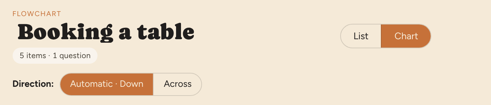
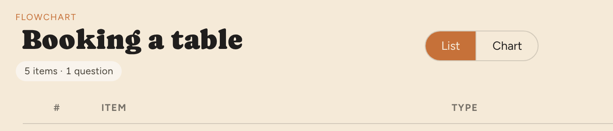
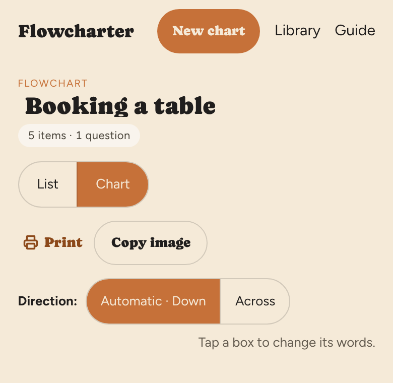
AAdd small icons
The same switch with a little list picture and a little flowchart picture beside the words. The smallest change. It still looks like the Direction switch, though.
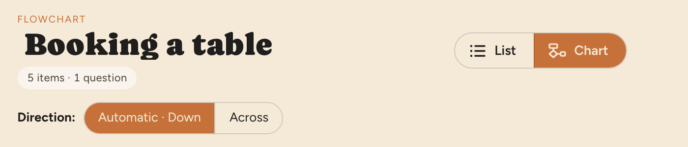
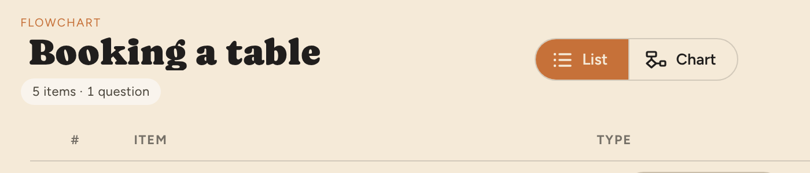
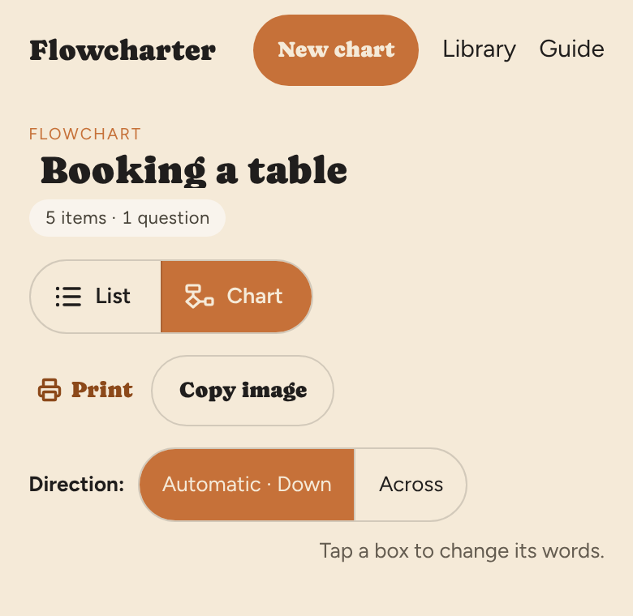
BPicture buttons
Two larger buttons, each with a small picture: a numbered list, and a little flowchart in the shapes' own colours. The one you're on is outlined in orange. It's the most obvious of the three, and it's no longer an orange-filled pill, so it looks nothing like the Direction switch. It takes a little more height (about 25px more on a phone).
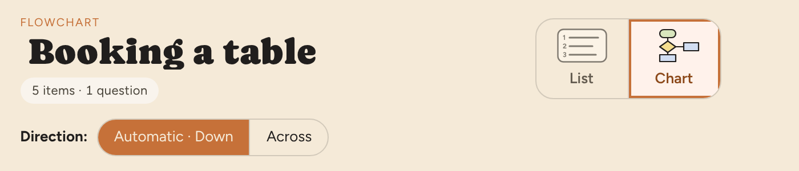
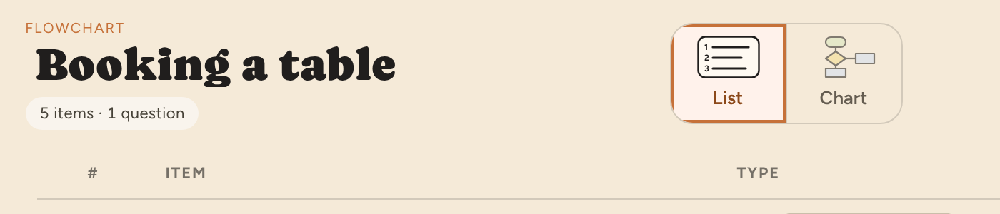
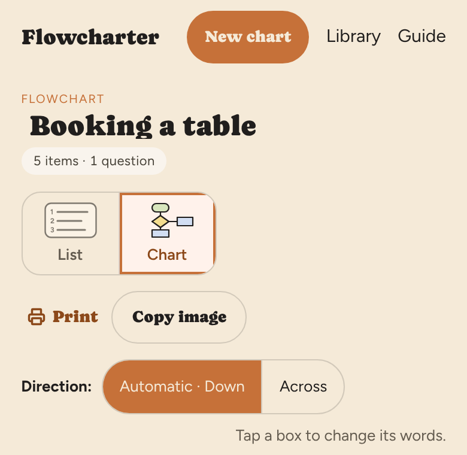
CTabs
Icons and words, as tabs: the one you're on is orange and underlined, like a tab at the top of a page. Tabs read as "which page am I on", so they're clearly different from the Direction switch. They're quieter than B and take no extra room.
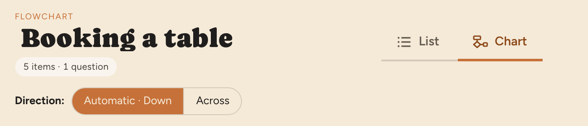
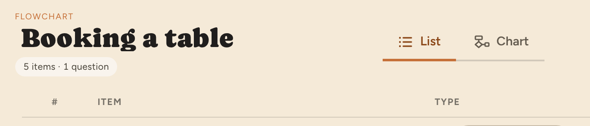
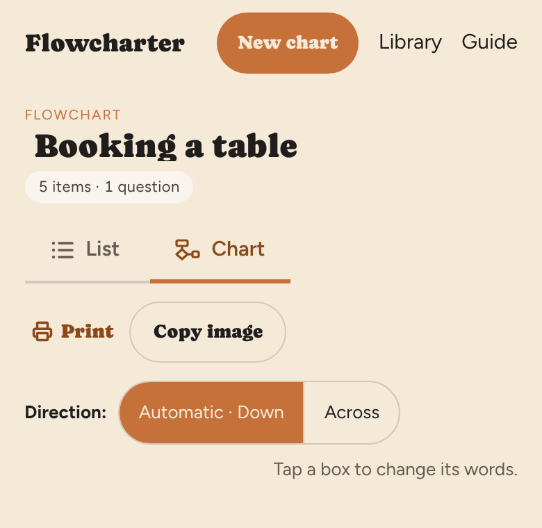
My suggestion: C, tabs. It says "these are two pages of the same chart" without taking more room, and it stops the two switches looking alike. B is the choice if you want it to be impossible to miss. Any of them can be mixed, for example B's pictures with C's tabs. Nothing has been changed in the app.